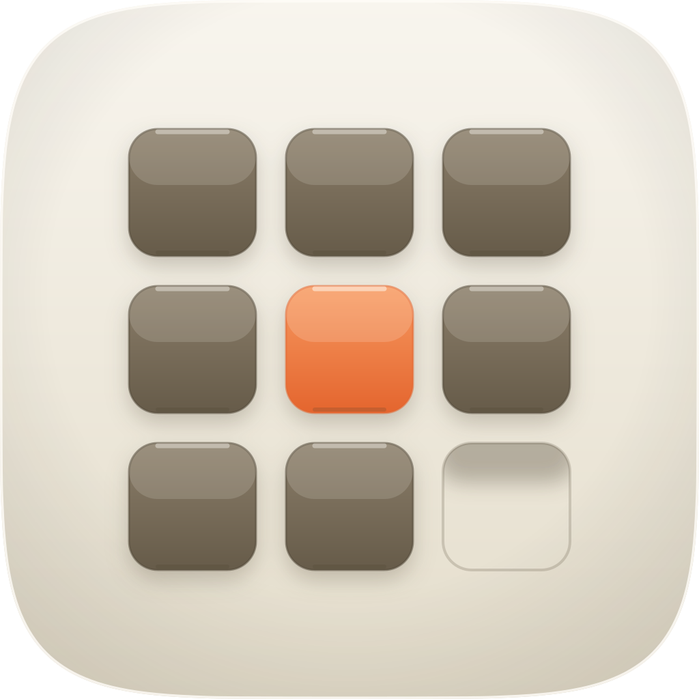
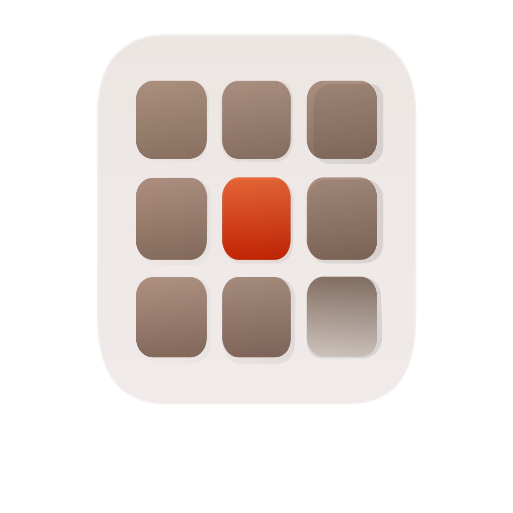
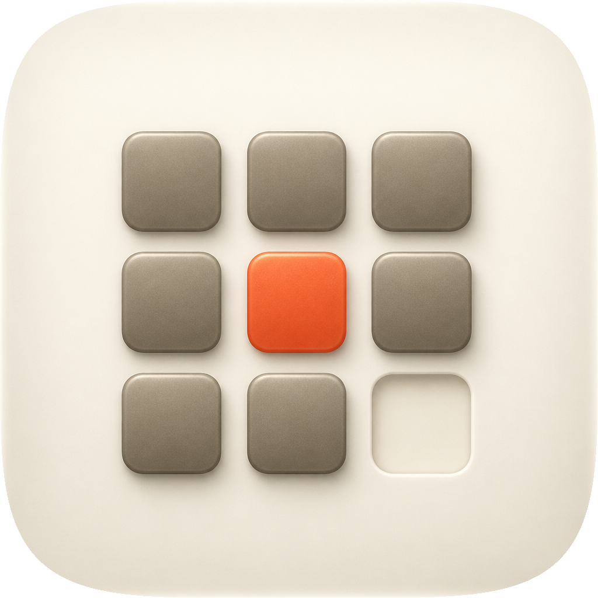
| Take | Renders at 128 / 64 / 48 / 32 / 16 css px (2× retina sources), plus the 16px squint magnified | Rubric | Verdict |
|---|---|---|---|
| A · icon.svghand-authored layered SVG — SHIPS |
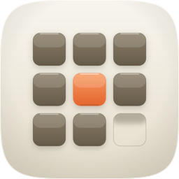 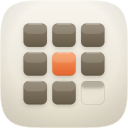 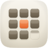 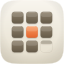 |
11 / 12 | Both readings survive to 16px, checked on the render rather than assumed: the vermilion cell and the empty ninth cell are each still present in the ×6 squint. Four named layer groups, so identity sits in shape and value and the lighting is a plane that can drop. Figure-ground measured 4.55:1 against the cushion; the accent separates from its neighbours by 1.87:1 in grayscale, which was 1.19:1 before the quiet frames were darkened and the accent was invisible without colour. Loses #11: a grid of rounded squares is one step from a category glyph, and it is the drawn absence, not the grid, that makes it this app's. |
| B · icon-engineB-arrow-7ad2c3.svgArrow 1.1 vector take |
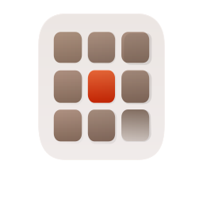 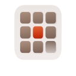 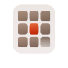 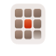 |
6 / 12 | Lost on the one thing the icon is about: it drew the ninth cell as a pale gradient-filled tile, so the grid reads as nine tiles of which one is beige rather than eight and a gap. That is the same failure the master went through twice and it is why the master ends with no fill there at all. Also ships a flat white ground with no cushion rim or vignette, which breaks the family register, and carries no layer plan, so #10 fails by construction. Nothing salvaged. |
| C · icon-engineC-0ae063-masked.pngGPT Image 2 raster, corpus-referenced — material target |
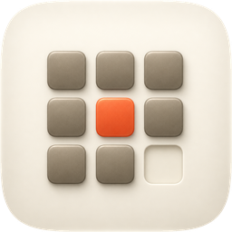 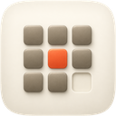 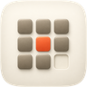 |
9 / 12 | Won the material read and that is why it exists: real cushion volume, believable soft extrusion on the tiles, and an empty cell drawn as a lit keyline socket rather than a shadow. Fails #10 as every flat raster does, fails #2 on an irregular grid (the gaps are not equal and the cells are not square), and only passes #1 because the family squircle was applied to it afterwards rather than designed into it. Salvaged into the master: a stronger top-edge catch, a seated shadow along each tile's lower lip, and the keyline reading of the socket. |
bg / mid / fg / highlight, confirmed by fidelity.py structure — so it maps onto Icon Composer layers and its identity is not hostage to the ground colour. Checks 1–4 were confirmed on actual renders, not imagined: the 16px squint still carries the accent cell and the gap, and the grayscale pass shows both without any colour at all. Material provenance is take C, ported as parameter edits rather than by converging the master onto the raster. Known liabilities to revisit: the grid is one move away from a generic app-grid glyph and leans on the absence to be specific; the master is measurably flatter than C at 1024 (composite 0.599 against it) and a later round could deepen the cushion volume without touching geometry; the accent separates from its neighbours by 1.87:1 in grayscale, which is enough to see but not comfortable, so a tinted-variant pass should be re-checked rather than assumed.| Reading | Value | Why it was taken |
|---|---|---|
| gel frame vs cushion | 4.55:1 | rubric #7 bar is 3:1; the first draft used near-white frames and measured 1.1:1 |
| accent vs its neighbours | 1.87:1 | was 1.19:1, i.e. invisible in grayscale, which is failure mode #3 |
| empty cell vs frames | 3.92:1 | the gap must not read as a tile |
| empty cell vs cushion | 1.16:1 | it is the cushion, pressed; anything higher makes it an object |
| grid width | 646 / 1024 = 63% | composition constant is one focal at 55–65% of tile width |
fidelity.py structure | PASS, 4 named groups | failed on the first build with 0 groups; that is rubric #10 by construction |
| composite vs take C | 0.599 @1024 · 0.936 @16 | material gap is at large sizes only; small sizes already agree |